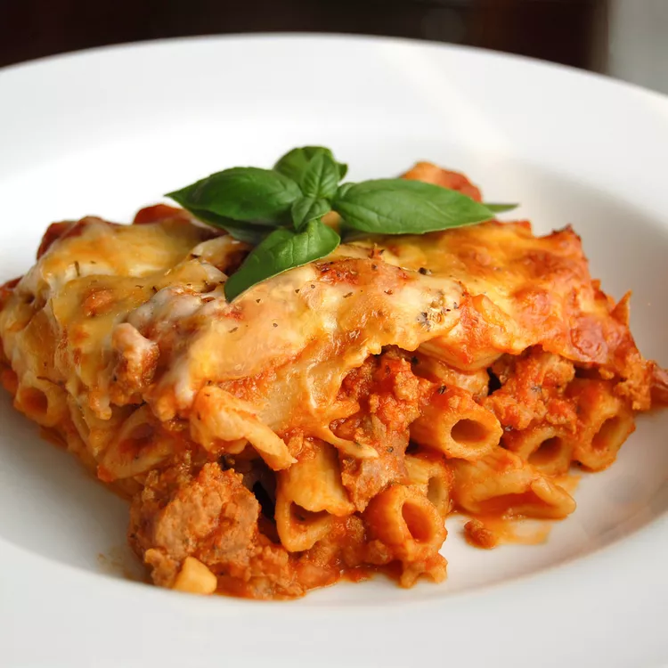

Baked Ziti

Descrpiton
Ziti are a shape of extruded pasta originating from Campania and Sicily, Southern Italy.They are shaped into long, wide tubes, about 25 cm (9.8 inches) long, that need to be broken by hand into smaller pieces before cooking. Ziti have similarities to bucatini, but are much thicker.
Instant Pot Beef Stew ingredients
- 1 pound dry ziti pasta
- 1 onion, chopped
- 1 pound lean ground beef
- 6 ounces provolone cheese, sliced/li>
- 6 ounces mozzarella cheese, shredded
- 2 tablespoons grated Parmesan cheese
Steps
- Bring a large pot of lightly salted water to a boil. Add ziti pasta, and cook until al dente, about 8 minutes; drain.
- Meanwhile, brown ground beef and onion in a large skillet over medium heat; stir in spaghetti sauce and simmer for 15 minutes.
- Preheat the oven to 350 degrees F (175 degrees C). Butter a 9x13-inch baking dish.
- CSpread 1/2 of the ziti in the bottom of the prepared dish; top with Provolone cheese, sour cream, 1/2 of the meat sauce, remaining ziti, mozzarella cheese, and remaining meat sauce. Top with grated Parmesan cheese.
- Bake in the preheated oven until heated through and cheeses have melted, about 30 minutes.